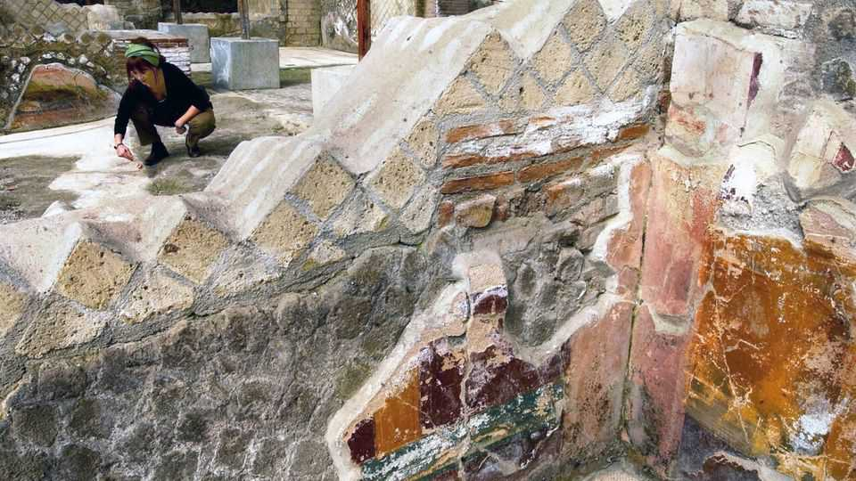

The Herculaneum scrolls are starting to be read
The technology is dazzling. Whether the prose will be is another matter
July 2nd 2026

It looks like nothing: a lump of coal, at best. A blackened fir cone or piece of excrement. It looks so underwhelming that other such lumps had, over the years, been destroyed or thrown away. This particular lump went by an underwhelming title, too: curators called it “PHerc. 1667”. But at a recent press conference in Naples, PHerc. 1667 became one of the most famous underwhelming-looking lumps in classics.
The eruption of Vesuvius in 79AD made two very different kinds of classical writing famous. The first was the letters of Pliny the Younger, which contained his account of that eruption. These are minor masterpieces of descriptive writing, with words like “evil cloud”, “zigzag flames” and the even more evil-feeling “descending cloud”. They are also masterpieces of dramatic irony. The reader knows what will happen; Pliny did not even have a word for “volcano”. They are, rightly, some of the most-read writings from the ancient world.
The second category of writing was the 600-1,000 scrolls that were covered by the falling cloud as it travelled, at 100kph and around 400°C, over a vast library in a villa in Herculaneum. The villa was rediscovered by well-diggers in 1750. Since then the finest scholars of every era have tried to read its scrolls—and largely failed (though some were read). In the 1820s Humphry Davy, a British chemist, tried a mixture of force, iodine, chlorine and heat to get to them. (“The papyrus smoked,” wrote Davy.) Most were bibliographic Gordian knots: to open them was to destroy them.

Until now. On June 25th the Vesuvius Challenge, a scholarly collaboration, announced that all of PHerc. 1667—1.5 metres of scroll—had been “virtually unwrapped” using a combination of a particle accelerator (to scan the script) and AI (to decipher it). If the remaining 400 closed scrolls (and pieces of scrolls, as some are in bits) are read, then perhaps 3m new classical words might appear. It is a dazzling achievement and could, hopes Brent Seales, the co-founder of the Challenge, create a “renaissance” in this area.
To understand why new works matter so much, it is necessary to understand how many old ones were lost. This is hard: from Christopher Nolan’s film of the “Odyssey” to Emma Thompson’s forthcoming “Iliad” (based on Pat Barker’s feminist retelling), the ancient world feels so noisily present that it is easy to forget how much has gone. But it has: only an estimated 10% of all classical literature has survived—and only 1% of all Latin. Worse, it was not lost evenly: Christian copyists did not like any ancient writings that were rude, lewd, sceptical, sexual, drunken or queer (which is to say: most of them), so the modern sense of the ancient world has been skewed through censorship.
Whenever a cache of ancient writings appears, it thus not only offers writing—but a potential rewriting of history. The graffiti in nearby Pompeii revolutionised classics (by showing that the Romans were rather filthy). The Dead Sea Scrolls revolutionised early Christian history (by showing that the Christian claims were not as unique as all that). The cracking of Linear B, a script, revolutionised the public’s understanding of Bronze Age Greece (by showing that the Mycenaeans kept obsessive records of their goats).
Whether Herculaneum will be as revolutionary is not clear. There are promising signs: so far every text the scholars have found is “completely new”, says Federica Nicolardi, an assistant professor of papyrology at the University of Naples. Every classicist has their wishlist of what might yet turn up: a poem by Sappho, a lost tragedy by Aeschylus, a lost book of Livy.
They are, alas, unlikely to have their wishes granted. The library, which is thought to have belonged to Piso, Julius Caesar’s father-in-law, was evidently magnificent. Its breadth was perhaps less so: most of what has appeared so far is Greek philosophy. One “virtually unwrapped” scroll was entitled “On Vices”—which sounded promising. But it was by Philodemus, a classical philosopher whom even classical philosophers are not all that interested in. James Warren, a professor of classical philosophy at Cambridge, thinks people have “got a bit carried away”. They are, he says stoically, unlikely to get the texts many are “thirsting for”.
Though more scrolls may yet be in there: like Pompeii itself, much of the villa is still unexcavated. The Vesuvius Challenge is famous for being a collaboration between very old, simple technology (papyri) and very new technology (AI). To get to those other texts, archaeologists may have to resort to an even older, blunter technology: the spade. ■
For more on the latest books, films, TV shows, albums and controversies, sign up to Plot Twist, our weekly subscriber-only newsletter